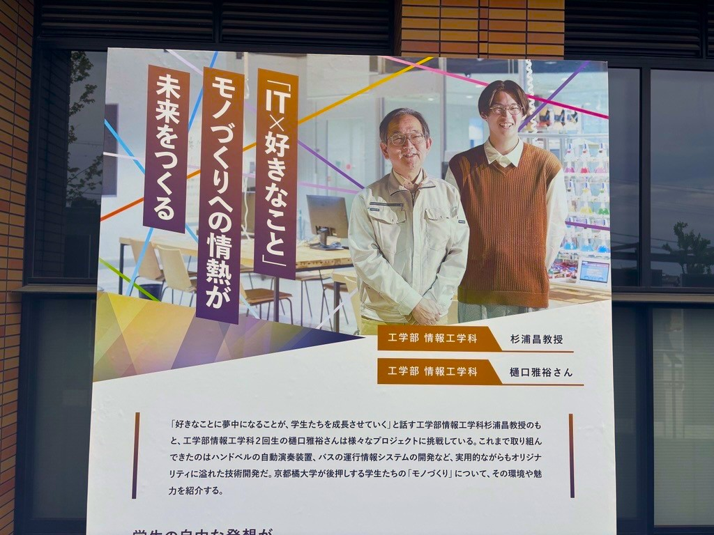

広報課が作成した今年のコンセプトページがありますが、そのページの内容が看板となって京都橘大学のバスロータリーに 掲示されていました。
ふむふむ、内容もびっしりと詰まっています…
全体像はこんな感じ。僕の左の方が、杉浦先生！ もし京都橘大学に来られる機会がありましたら、見てみてください～
- 2025年あたらしい選択肢になろう。https://www.tachibana-u.ac.jp/concept2025/
広報課が作成した今年のコンセプトページがありますが、そのページの内容が看板となって京都橘大学のバスロータリーに 掲示されていました。
ふむふむ、内容もびっしりと詰まっています…
全体像はこんな感じ。僕の左の方が、杉浦先生！ もし京都橘大学に来られる機会がありましたら、見てみてください～